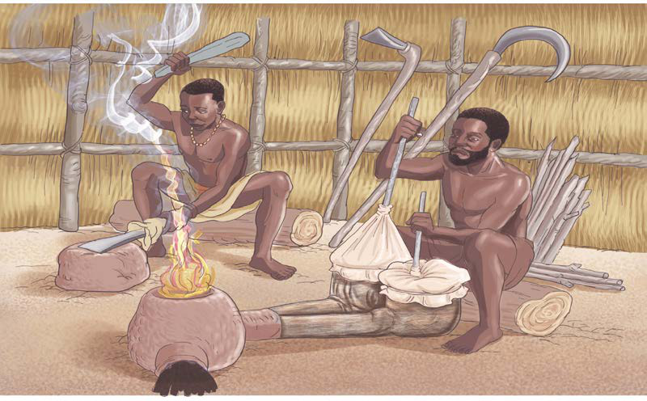
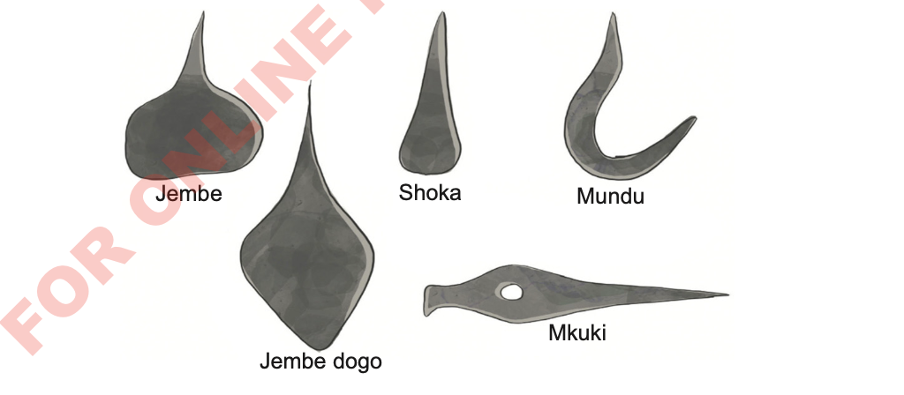

Kielelezo namba 8, kinawasilisha baadhi ya zana za awali zilizotengenezwa kwa chuma.

Kielelezo namba 8: Baadhi ya zana za awali za chuma
Wahunzi walitengeneza zana kama vile mashoka na mapanga kwa ajili ya kukatia nyama na kufanyia shughuli za ulinzi. Pia, yalitumika kukatia miti kwa ajili ya ujenzi na kuandaa shamba. Zana nyingine ni mikuki na mishale iliyotumika kwa ajili ya
52